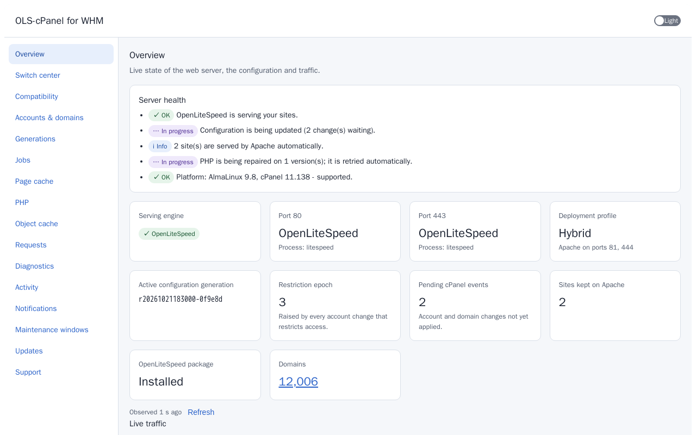

Faster sites. Lower load. One command.
OpenLiteSpeed for cPanel & WHM
OLS-cPanel-WHM replaces Apache with OpenLiteSpeed on a cPanel/WHM server and keeps everything cPanel manages working, with a safe, planned switch and an automatic way back.
- Works with cPanel® & WHM®
- Powered by OpenLiteSpeed
- AlmaLinux 9 (x86_64)
- Release 0.2.12
- GPLv3
- Signed releases


What it is
OLS-cPanel-WHM puts OpenLiteSpeed in front of your cPanel accounts. Accounts, domains, SSL and AutoSSL, PHP versions, .htaccess, suspensions, logs and bandwidth keep working as they do today. Administrators get a plugin in WHM, and every hosting account gets a plugin in cPanel.
Why use it
- Pages are served by a fast web server with a built-in page cache, so sites respond faster and use less CPU.
- The switch from Apache is planned, checked site by site and undone automatically if anything fails.
- Site owners get their own tools and need no help from you for everyday cache tasks.
- After the install you do not have to run commands. Changes in cPanel and product upgrades apply by themselves.
Key features
Fast by default
LiteSpeed page cache (LSCache), HTTP/3, OPcache on every PHP version, and a per-account object cache (Valkey) that is configured into WordPress automatically.
Safe switch
A reviewed plan, per-site checks and an automatic return to Apache if anything fails. Sites OpenLiteSpeed cannot reproduce exactly stay on Apache behind it.
Zero touch
New accounts, domains, certificates and PHP versions apply by themselves. Upgrades apply themselves. The PHP environment repairs itself.
WHM plugin
Dashboard, switch center, accounts, page cache, PHP, object cache, activity log, notifications, maintenance windows, updates and a support bundle. Tour
cPanel plugin
Page cache with one-click purge, PHP, object cache, logs, speed check, traffic history, an
.htaccessadvisor and requests to the host. TourSecure
A small privileged broker, accounts isolated from each other, and signed releases verified before anything changes. Safety
Requirements
- AlmaLinux 9 on x86_64. This first public release supports AlmaLinux 9 only.
- A licensed, working cPanel & WHM. This product does not install or license cPanel.
- Root access to the server, and console access (for example your provider's web console) in case you ever need to recover.
- A current backup kept somewhere other than the server itself.
Install in one command
Run this as root on the server. The command comes from the release notes of release 0.2.12; check them on the releases page.
d=$(mktemp -d) && curl --proto '=https' --tlsv1.2 -fsSL -o "$d/install.sh" "https://github.com/2tdv/OLS-cPanel-WHM/releases/download/0.2.12/install.sh" && echo "83667d00c98030834aba08968cf43f1e564d646af6e7b2ba0899e574ecc1bc6f $d/install.sh" | sha256sum -c - && sh "$d/install.sh"; rm -rf "$d"The installation page explains each stage and a stricter variant that checks the installer's signature first.